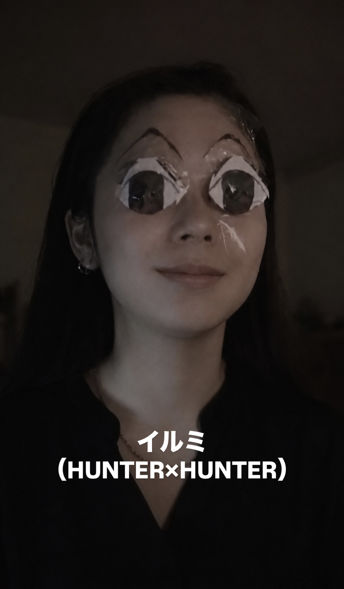

KANNA
INTERACTIVE RESUME / 2026
ABOUT
WHY SUZUKAN
JOURNEY
THINKING
EXPERIENCE
INTEREST
SUZUKAN
01 / PROFILE
KANNA
前田 栞那
KANNA MAEDA
教育や福祉の現場にある課題を、
AI・ITで解決できる人になりたい。
現場を知り、問いを深め、実際に試す。
そのための環境として、すずかんゼミに応募します。
UNIVERSITY
ZEN大学
FIELD
AI / DATA
INTEREST
HUMAN / WELFARE / SOCIAL DESIGN
AIM
AI・IT × 教育・福祉
BASE
兵庫県

KANNA / 2026
ABOUT THE PHOTO
好きなものには、ちょっと全力。
好きな作品のキャラクターになりきって遊んだときの一枚です。
「面白そう」と思ったことには、少し変なくらい全力で飛び込む。
そんな好奇心と行動力が、自分らしさの一つだと思い、この写真を選びました。
知らないことを
そのままにしない。
調べて、考えて、つないでいく。
好奇心を原動力に、
人と人の間にある課題を見つめる。
AIやデータを使いながら、
「個人の問題」を「仕組みの問題」として
考えることに興味があります。
将来は、現場で起きている困りごとを
仕組みの側から解決できる人になりたい。
02 / WHY SUZUKAN NOW
WHY
SUZUKAN?
目指しているのは、
現場の困りごとを
仕組みの側から解決できる人。
そのためには、技術だけでなく、現場にいる人の視点や、 自分とは違う考え方に触れる必要があると考えています。
すずかんゼミでは、さまざまな背景を持つ人と問いを深めながら、 「自分ならどう考えるか」を何度も揺さぶってみたい。
01
現場を見る
02
問いを深める
03
異なる視点と出会う
04
実際に試す
03 / JOURNEY
MY
JOURNEY
環境、経験、学び。
一つひとつの出来事が、
「なぜ？」を考える今につながっています。
そして、その問いを
未来の仕事につなげたいと考えています。
2023
国際高校
新しい視点と
価値観に出会う
2025.08
高卒認定取得
自分で学び続ける
土台をつくる
2025.12
高校中退
自分に合う環境を
考え直す
2025
支援員
人の困りごとに
向き合う
2026
就労支援
ITと福祉が交わる
支援を知る
2026 —
ZEN大学
AI・データを学び
未来につなげる
04 / HOW I THINK
目の前の現象だけでなく、
その奥にある構造を見る。
「なぜ？」を起点に観察し、
共通する構造を探し、
仮説を立てて試してみる。
目の前の困りごとを、
個人の努力だけで終わらせず、
仕組みとして考えたい。
WHY?
なぜ起こるのか
観察する
構造を見る
仮説を立てる
試してみる
05 / EXPERIENCE
WHERE
I LEARNED.
2023 — 2025
WORK
株式会社フォーシーズ
PIZZA-LA
店舗スタッフ
相手を見ながら動くこと、
小さな変化に気づくことを学ぶ
2025 — 2026
WELFARE
就労継続支援B型事業所
支援員
支援員
一人ひとり違う困りごとに向き合い、
支援のあり方を考える
2026
IT × WELFARE
メンタルヘルスラボ株式会社
就労移行ITスクール 新大阪事業所
IT × 就労支援
現場の課題とITの距離を知り、
技術を支援につなげる視点を得る
06 / STRENGTH
WHAT I
BRING.
私が持っているのは、
完成したスキルだけではありません。
「知りたい」を行動に変え、
次の問いをつくる力があります。
01
CORE
Curiosity
好奇心・探究心
02
CORE
Abstract Thinking
抽象化して考える
03
CORE
Pattern Recognition
共通点・構造を見つける
04
USING
AI Utilization
AIを思考の道具にする
05
LEARNING
Data Analysis
学習中
06
LEARNING
Python
学習中
07 / CURIOSITY
好奇心が、
私のエンジン。
?
気になる
小さな違和感も見逃さない
×
調べる
本・人・AIを使って深掘りする
+
つなげる
別々の知識を組み合わせる
!
試してみる
小さく形にして、確かめる
08 / WHAT I CARE ABOUT
THINGS
I CARE ABOUT.
AI
DATA
HUMAN
WELFARE
MENTAL HEALTH
SOCIAL DESIGN
TECHNOLOGY
LEARNING
MUSIC
CARS
09 / MY QUESTION
“
なぜ、問題は起こるのか。
そして、どうすれば
仕組みとして
解決できるのか。
10 / WHAT I WANT TO EXPLORE
WHAT I
WANT TO
EXPLORE
教育や福祉の現場にある困りごとを、 個人の努力だけで終わらせず、 仕組みの側から捉える方法を考えてみたい。
特に、AI・ITやデータを使って、 「なぜ困りごとは起こるのか」 「どこを変えると支援が変わるのか」を 具体的に考えたい。
すずかんゼミで出会う人や問いを、 実際の小さな実践につなげてみたい。
多様な
視点
深い
学び
実践に
つなげる
社会を
変える
11 / MOTTO
好きな人と、好きな場所で、
好きなことをする。